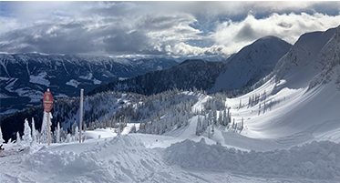
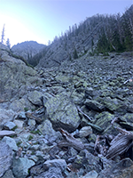

HOBBIES
Virtual
On his spare time, Chase plays quite a few video games as well as streams often on Twitch. Although he is new to the world of streaming, his platform continues to grow. Minecraft, Fortnite and Phasmophobia are the most common games that Chase will stream.
Minecraft is a game where you create you own world, either by yourself in single player or with your friends in a multiplayer world. Chase has played this game since 2016, and has continue to advance his knowledge of the game. He has begun to tinker with the creation of mod packs and texture packs for the game and plans to continue down that road in the future.
Fortnite is a combate, online game that allows 100 players into a lobby to battle till there is one man or one team left standing. By searching through chests and lott boxes/crates you can find better weapons to help defend yourself better.
Phasmophobia is a horror related game that can be played amongest multiple different plateforms. The goal of this game is to gather evidence and attempt to figure out what kind of ghost is haunting that residence. Chase has only recently began playing and streaming this game and many views and followers have taken a liking to watching him play this spooky game.
Reality
When Chase does not have his nose stuck in his PC you can find him seeking all kinds of adventures. From climbing to the peaks of some of the tallest mountains in Canada during the summer, to cruising down those same mountains stapped to a snowboard in the winter.
Growing up in the small city of Medicine Hat, there was not a lot of options for ski resorts. About 45 minutes of out city limits there is a small ski lodge called Hidden Valley Ski Resort. That is where Chase's thrill for adventure first began.

